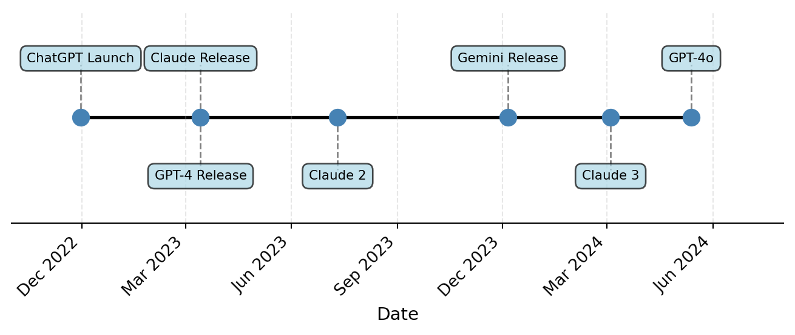
8 Technology: Automation
8.1 Introduction
In this chapter we are going to dig deeper into one aspect of how technology impacts workers: automation. This will first involve studying some empirical research on how firms and places have adopted AI technology and how this adoption has translated into changes in the labor market. As part of this empirical exploration, we will link back to our three big questions that we began this course with. Lastly, we will consider some early research on the potential impacts of AI on the future of the labor market.
8.2 Robots and Jobs
In the last chapter, we studied a general model of how technology may impact workers by studying the tasks that workers perform. While the empirical patterns in the data (i.e. job polarization) were broadly consistent with the theory, we did not have direct evidence on how technology adoption impacted workers. In this section we will first consider a very specific form of automation technology: industrial robots. This is in contrast to what we focused on in the last chapter, which was more general and focused on the use of computers.
An industrial robot is defined by the International Federation of Robotics as “an automatically controlled, reprogrammable, multipurpose machine” In simpler terms, these are robots that can perform a variety of tasks in an industrial setting. They are typically used in manufacturing environments. There are a few reasons why industrial robots are particularly useful for studying the impact of technology on workers. First, the International Federation of Robotics keeps track of where industrial robots have been adopted. This will allow us to measure the rate of adoption in different regions on the United States. Second, industrial robots are the type of technology that we can reasonably expect to have a large impact on workers. They are designed to be somewhat general in their use, can perform a variety of tasks, and don’t need a dedicated production worker to operate them. Therefore, they are a good candidate for studying how automation technology impacts workers.
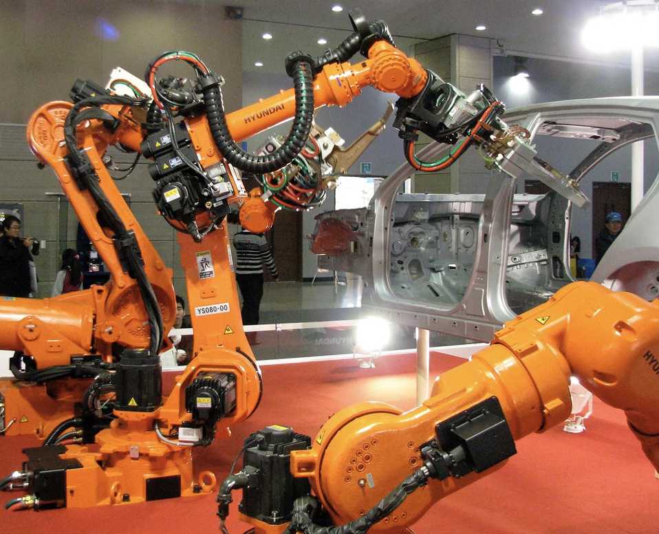
Acemoglu and Restrepo (2020) is an extremely influential study that considers how industrial robots have impacted the labor market. Below (from Acemoglu and Restrepo (2020)) is a figure that shows the number of industrial robots per thousand workers. As can be seen from this figure, Germany is by far the leader in industrial robots per worker, with over double the rate as the next highest country by 2014. The US is similar in levels to many European countries, however. In the beginning of the 1990s, there were about 0.5 robots per thousand workers. By 2014, there is about 2 robots per thousand workers. The overall goal in the paper is to answer the question: how much does a single industrial robot decrease (or increase) employment and wages.
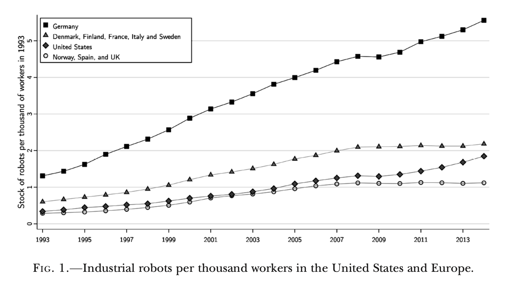
Theoretically, the answer is ambiguous. One common approach to the question of how technology will impact workers is to try and predict which jobs can be automated. You may have seen headlines like this for AI, but prior work has done the same for things like industrial robots. But this misses an important feature of the economy. They don’t take into account how other sectors and occupations will respond. For example, if cars become cheaper due to industrial robots, and people have more money to spend on other goods, will other sectors expand? Could these productivity impacts increase overall demand for workers (even if some workers are replaced by robots)? Maybe the workers that are replaced by robots will find new jobs in other sectors relatively quickly?
So what do Acemoglu and Restrepo (2020) do to answer this question? The analysis is composed of two main parts. First, they take advantage of the fact that different industries are differentially exposed to industrial robots. Some industries, such as automaking, are highly exposed. They will likely adopt the industrial robots as they tend to be highly productive for that production process. Other industries, for example, any service industry, is not exposed to industrial robots. If you look into to the data, this idea pans out. The automotive industry between 2004-2007 had about 20 industrial robots per thousand workers. Services had basically none.
Next, they compare different areas in the United States that have different industrial composition. For example, Detroit is famously for producing cars. This area, is therefore, heavily exposed to industrial robots. What the authors do is construct an exposure to robots measure for every commuting zone in the United States (a commuting zone is a collection of counties that tend to be connected economically). The exposure measure is somewhat complicated in practice, but we can make a simple example in order to understand the intuition.
A Now, in the actual paper the measure of robots is adjusted penetration ratio (APR) of robots. It is a bit more complicated then what we have discussed here, but the key intuition is the same. In practice, there are additional measurement complications. However, for our purposes, we can think about it in this simple way. The figure below shows the exposure to industrial robots by commuting zone in the United States. The darker the color, the more exposure to industrial robots. The value indicates how many more robots per thousand workers the commuting zone is expected to adopt between 1993 and 2007.
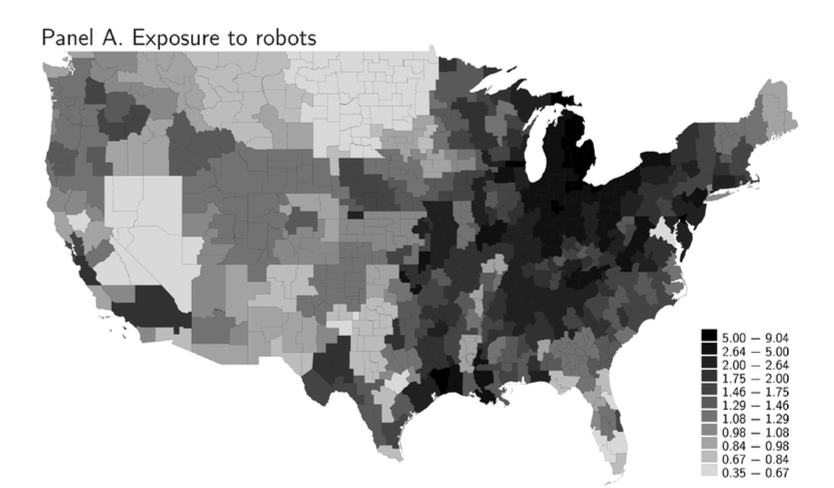
The darker areas around Michigan are likely due to automotive manufacturing. These commuting zones are expected to see an increase in 5-9 robots per thousand worker. However, even within a state, you can sometimes see there is considerable variation. Texas, for example, has areas that are not exposed much at all as well as highly exposed.
Acemoglu and Restrepo (2020) compares places with high exposure to places with low exposure. The figure below shows the main result from the paper.
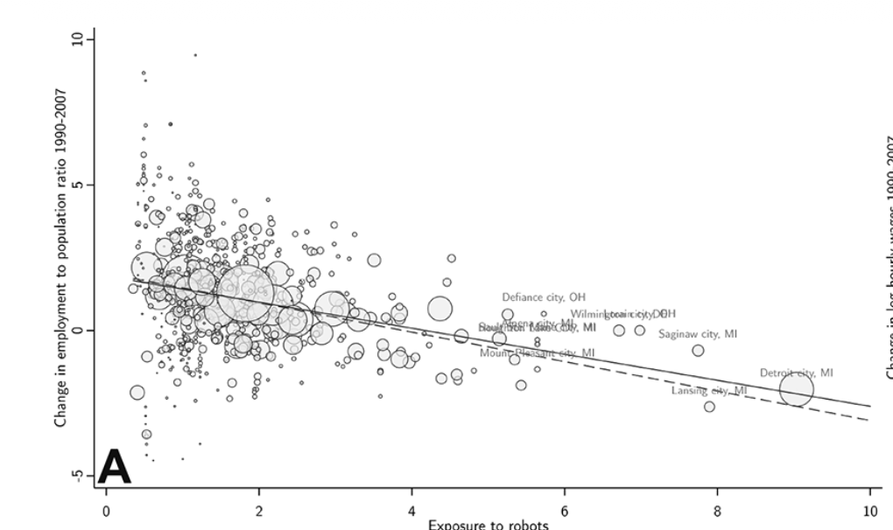
In this figure, each dot is a bubble is a commuting zone, where the size of the bubble is proportional to the employment in the commuting zone. Some bubbles are indicated by the main cities in the commuting zone. For example, you can see the bubble at the far right of the graph is Detroit, Michigan.
The y-axis is the change in the employment to population ratio. For example, if the employment to population ratio is 60 (indicating 60 percent of individuals are employed), and increases to 65 between 1990 and 2007, then the value on the y-axis would be equal to 5. If it has declined it would be negative.
As we can see in the figure, some commuting zones had positive increases in employment to population ratio, while others had negative. It is a little difficult to see in this graph given the number of commuting zones, but as we increase the exposure to robots, the growth rates tend to become more negative. For example, Detroit has the highest exposure to robots and also experienced a (relatively) large negative decline in the employment to population ratio.
The line in the graph shows us the magnitude of this relationship. A steeper slope indicates changes in robot exposure are associated with larger changes in employment. In this setting, Acemoglu and Restrepo (2020) found that an increase in 1 robot per thousand workers is associated with a 0.44 percentage point decline in the employment to population ratio.
Now we have to be careful here. What is the variation we are using here? We are comparing changes across different commuting zones. But what if these commuting zones were already on different trends. For example, what if Detroit was also exposed to global competition for cars during this period and was already declining in demand before industrial robots proliferated. Then we are falsely attributing changes in employment to changes in robots, even though the true mechanism is due to changes in exposure to trade.
Acemoglu and Restrepo (2020) takes this general concern very seriously: what if there are other factors that vary across these commuting zones that are driving the results. They provide a litany of tests to show that this can’t be explained by other factors. One useful test is again studying pretrends. If we look to a period before industrial robots, do we see places like Detroit, that have high exposure to robots, see wage declines. If so, then this implies we should be concerned about the validity of this research design. Places with high exposure to robots were seeing employment declines before industrial robots were even available. The figure below performs this test. Unlike our figure before, we see that places exposed to adopting robots in the future saw no differential changes in employment between 1970 and 1990.
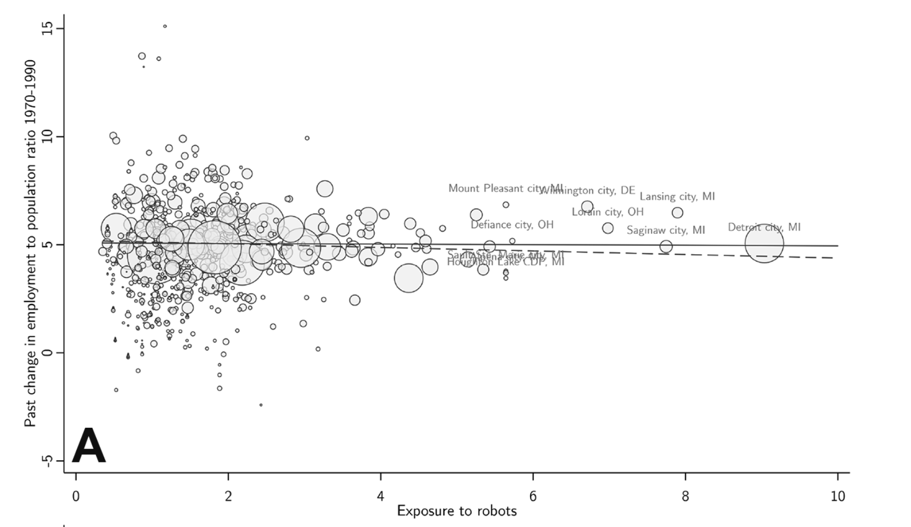
So let’s regroup now. We found that commuting zones that were exposed to industrial robots saw declines in employment. Are we ready to conclude that automation resulted in declines in aggregate demand. Not quite!
What is the problem? Again we can take the example of Detroit to reinforce the primary issue. Yes, Detroit saw a decrease in employment. But maybe the productivity of industrial robots lowered the price of cars. People all across the country may benefit from these lower prices and increase consumption in other sectors. Since other sectors will expand, labor demand will increase in these other sectors. This is an extremely difficult conceptual issue that is hard to directly address with data. Acemoglu and Restrepo (2020) use a theoretical model to answer this question. How this works in practice is complicated and beyond the scope of this class. Generally, models rely on sometimes strong, sometimes hard to verify assumptions. The price of using a model is that we often have to make these assumptions.
The benefit, though, can be great. In this case, it allows us to compute the aggregate impact of a robot on labor demand. Aggregate in this context refers to the overall effect on the economy, rather than just on individual commuting zones. In other words, it allows us to incorporate the facts that commuting zones can trade goods (like buying cars from Detroit). When Acemoglu and Restrepo (2020) do this, they find that one more robot per worker decreases aggregate employment by 0.2 percentage points. This is smaller than we found at the commuting zone level, which makes sense. Our story was that robots decrease costs, which could expand opportunities in other areas. To get a better sense of the importance of this result, we can convert this number to an absolute level of jobs by multiplying by the increase in industrial robots. This number implies that the adoption of industrial robots led to the loss of 400,000 jobs in the US.
8.3 Inequality
So far, we have studied how robots impact overall employment and wages. However, another important question is how do robots impact inequality? Do they impact all workers equally, or do they impact some workers more than others? To answer this question, we will take a slightly different approach than we did in Acemoglu and Restrepo (2020).
The prior paper by Acemoglu and Restrepo (2020) focused on places. Do places that adopt more robots see changes in employment and wages? Another way to approach this question is to ask: how do firms that adopt robots change their behavior relative to firms that do not adopt robots? This is often more difficult to do as it requires firm-level information, which can be hard to come by. Why is it so useful though? Well, for one, it allows us to consider changes right around the time the firm adopts a robot. This will allow us to verify some of the assumptions we made in the prior approach. For example, we assumed that places that adopted robots were not already on different trends. By looking at firm-level evidence, we can see if firms that adopt robots were already seeing different trends before they adopted robots.
This firm-level approach is taken in Humlum (2021). This paper makes use of impressive data in Denmark which allows one to have information on firm robot adoption, as well as information on all of the workers’ earnings at the firm. As we will see, the combination of these two datasets allows us to answer some interesting questions about how robots impact inequality.
First, Humlum (2021) documents something that might be surprising. Firms that adopt robots tend to increase the amount they spend on labor. The Figure below shows this surprising result. The way to interpret this figure is that we are comparing firms that adopt robots to firms that do not adopt robots. The y-axis is the percent change in the wage bill at the firm. The x-axis is time, where time 0 is the year the firm adopts a robot. Therefore, the fact that the blue line jumps up to 5 percent at time 0 indicates that firms that adopt robots see a 5 percent increase in their wage bill relative to firms that do not adopt robots. For our purposes, we are going to focus on the line labeled Data, as this is what actually happens in the data after robot adoption. The “model” line is from a theoretical model developed in the paper, something we will not discuss here.
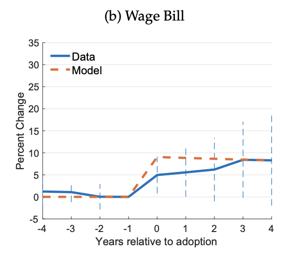
How does this square with our prior evidence from Acemoglu and Restrepo (2020)? Remember that paper found that places that adopted robots saw declines in employment and wages. There are a couple of ways to reconcile these two findings. First, Humlum (2021) is studying firms that adopt robots relative to firms that do not adopt robots. If we look in the data, firms that adopt robots see a real competitive advantage. Their sales increase significantly relative to firms that do not adopt robots.
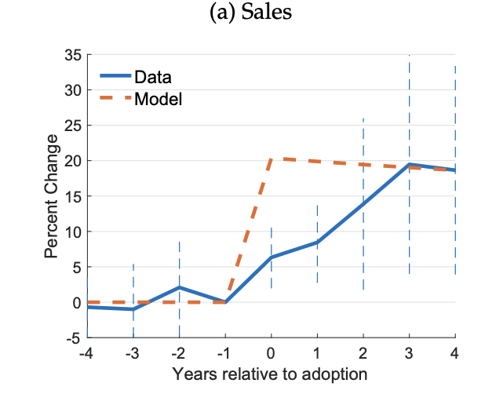
Acemoglu, Lelarge, and Restrepo (2020) similarly studies firm-level evidence on robot adoption and finds similar patterns. What is happening is that robots give firms a competitive advantage. They can produce more at lower costs. This allows them to expand their sales significantly relative to firms that do not adopt robots. If your competitor adopts a robot you should be worried. Acemoglu, Lelarge, and Restrepo (2020) find that this generally causes large decreases in your sales. Therefore, overall, while robot adoption increases employment at the firm adopting the robot, the impacts on other firms imply that the overall impact on employment in the economy is negative.
Returning to Humlum (2021), A key contribution is to study how robot adoption impacts different types of workers. This is very clear at the firm level. We can see how the firm adjusts their employment. What we find is that how you are impacted depends a lot on what type of work you do. Production workers include workers that perform tasks like welding and assembly. These types of tasks are likely to be automated by industrial robots.
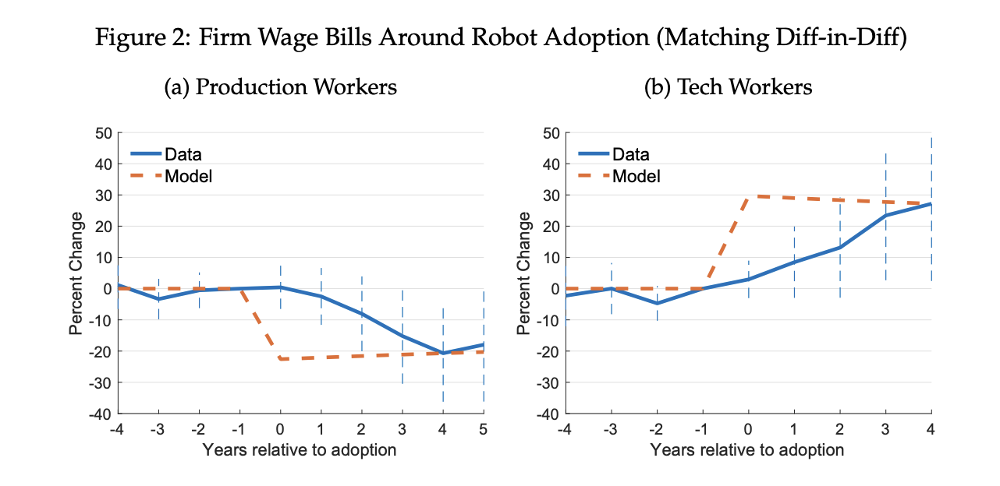
Humlum (2021) finds that demand for production workers drops significantly around robot adoption. The figure above shows that production employment drops by about 20 percent relative to firms that do not adopt robots. At the same time, demand for tech workers (such as engineers, scientists, etc.) sees an enormous increase in demand. Relative to firms that do not adopt robots, tech employment increases by about 30 percent. Therefore, robot adoption has shifted the composition of employment at firms significantly away from production workers and towards tech workers.
Humlum (2021) finds that robots decreased real wages of production workers by about 5.4 percent. In contrast, for other types of workers, robots increase wages, particularly for high-skill technology workers. Therefore, robots have led to increased inequality. This is a very clean and useful study of an important technology. However, again, there are likely many other technologies that cause automation and have important impacts on inequality. Do these other technologies have similar impacts on inequality? How large of a role does technology play in driving inequality generally?
To the answer to this question, we can turn back to Acemoglu and Restrepo (2022), which directly addresses this issue. Their analysis proceeds in two steps. Their idea is that different groups, such as high-school dropouts vs. college graduates, are differentially exposed to technology. As we have seen in earlier chapters, the difference in wages between individuals with different education levels has increased significantly over time. Acemoglu and Restrepo (2022) ask: how much of this increase in inequality can be explained by technology adoption?
They find a startlingly large impact of technology on inequality. Again, the analysis is conceptually similar to earlier work we have discussed. High-school dropouts, for example, tended to be working in industries with many routine production tasks. Acemoglu and Restrepo (2022) show that technology adoption predicts the removal of these routine production tasks. This in turn leads to declines in wages and employment opportunities for individuals that tended to work in those professions. They estimate that about 50-70 percent of the increase in wage inequality can be attributed to automation technology. This is a massive number. There are tons of other things happening in the labor market that could be driving inequality, such as globalization, changes in labor market institutions among others. Yet, Acemoglu and Restrepo (2022) find that technology adoption can explain the majority of the increase in wage inequality.
8.4 AI
So far, we have focused on studies of automation technology that have been around for a while. Let’s now turn to the question of how AI might impact the labor market. To begin, let’s define exactly what we mean by AI. Artificial Intelligence (AI) is a broad term that has been around for a long time. The field emerged in the 1950s shortly after the first digital computers were invented. The Dartmouth Conference in 1956 is often cited as the founding event of AI as a field of study. This was the first time that researchers were brought together to discuss and brainstorm about artificial intelligence. Below is the proposal for the conference, which is often credited with introducing the term “artificial intelligence.”
“We propose that a 2-month, 10-man study of artificial intelligence be carried out during the summer of 1956 at Dartmouth College in Hanover, New Hampshire. The study is to proceed on the basis of the conjecture that every aspect of learning or any other feature of intelligence can in principle be so precisely described that a machine can be made to simulate it. An attempt will be made to find how to make machines use language, form abstractions and concepts, solve kinds of problems now reserved for humans, and improve themselves. We think that a significant advance can be made in one or more of these problems if a carefully selected group of scientists work on it together for a summer.”
One somewhat remarkable fact is that the proposal goes on to describe concepts that are still at the forefront of modern AI research. For example, the proposal discusses “Neuron Nets”. The general concept is now refereed to as “Neural Networks”, which are a key component of modern AI systems.
The overall goals of this conference were massive in scope, and the problems extremely difficult. There were two basic approaches to developing artificial intelligence that emerged after this conference. The first, which dominated the field for a long time, was the symbolic approach. This approach focused on explicitly programming computers to perform tasks that required intelligence. For example, early AI systems were designed to play chess by following a set of rules and strategies. You can think of this as hand-coding the logic of chess into a comptuer program. The different pieces have different rules for how they can move, and the program would evaluate different possible moves to determine the best one.
While some tasks can be done this way, for many tasks, this turned out to be extremely difficult. For example, let’s take image recognition. If I show you an image, you can probably very easily tell me whether or not there is a cat in the image. But what if you had to tell a computer exactly how to do this? You would have to write down all of the features that make up a cat. For example, cats have pointy ears, whiskers, fur, and a tail. You would then have to write a program that looks for these features in an image. However, this approach is extremely difficult. There are many different types of cats, and they can appear in many different poses and lighting conditions. Conceptually, even though this is very easy for a human to do, it is extremely difficult for us to write down how we do it.
This is where the second approach to artificial intelligence comes in: machine learning. Instead of explicitly programming the computer to perform a task, machine learning involves giving the computer a large amount of examples. Instead of telling the computer how to recognize a cat, we can give it thousands or millions of images that are labeled as either containing a cat or not containing a cat. The computer can then learn from these examples and figure out the patterns that distinguish images with cats from those without.
Machine learning approaches have also been around for a while now, but they didn’t enjoy much success for a long time. For example, the first formal neural networks were proposed in the 1950s. But they didn’t really work. You could have a structure to classify images, but it just didn’t perform well. This changed with the deep learning revolution in the 2010s. The real breakthrough we needed was scale. We needed to be able to have extremely flexible models that are given many, many examples. The combination of large datasets and powerful computers made researchers able to train neural networks on a massive scale. These deep learning approaches first saw success in image classification tasks, before breaking through into natural language processing tasks.
The key development in natural language processing came in 2017 with the introduction of the Transformer architecture by Vaswani et al. (2017). This provided a workflow for training extremely large language models (LLMs). By large in this context, we mean models with many, many parameters. In this context, you should think of a parameter as how specific a model can be. A large model (at least theoretically), can potentially be useful in many different, specific contexts.
Today, the word “AI” has become mostly associated with these large language models, but it is a broader field generally. The most state-of-the-art models are also starting to combine symbolic reasoning with machine learning. The idea is to take advantage of the knowledge we can explicitly program into a system, while also taking advantage of the flexibility of machine learning systems to learn tasks that can’t easily be expressed with symbolic reasoning. For the rest of the chapter, we will focus on the impacts of these modern LLMs on the labor market and use the term “AI” to refer to these systems specifically.
One of the first papers to study the impact of AI on the labor market is Brynjolfsson, Chandar, and Chen (2025). They take advantage of administrative payroll data to provide some early evidence on the impacts of AI on the labor market. The key aspect of administrative payroll data that is useful is the availability of recent data. For example, the data in this paper ends at July 2025. This is key since AI has only recently been adopted widely. Therefore, we need recent data to study the impacts of AI on the labor market. The timeline below shows some of the key events in the recent history of AI.
The approach in the paper is similar to approaches we have seen before. The first thing we need to consider is how to measure an occupation’s exposure to AI. For general computers, we used a task-based approach. We considered the tasks that workers performed in different occupations and classified them based on whether they were routine vs. nonroutine, or cognitive vs. manual, with the idea being that computers were able to automate many types of routine tasks.
Work into AI has taken a similar approach. Some authors have used O*NET task data to classify occupations based on the tasks they perform. One alternative approach, which we will focus on here, is to use data from the AI systems themselves. Handa et al. (2025) is a recent working paper that uses data from millions of conversations with Claude to see what types of questions AI tends to be answering. For each query, they link this query to a task in O*NET. For example, take the following query:
Query: Could you look over this code and check for bugs?
This would be labeled as a Computer and Mathematical task. In particular, this would be linked to a task described as “Program and debug computer systems and machinery.” They then repeat this for millions and millions of queries. Overall, they find that 37% of the queries are related to Mathematical and Computational Tasks. For example, specifically, the most common tasks fall under “Develop and Maintain Software Applications and Websites.”
In O*NET, each occupation is associated with a group of tasks. If the tasks for a given occupation tend to show up a lot in queries, then that occupation would be considered highly exposed to AI. For example, computer programmers tend to perform a lot of the tasks that show up in the queries. Therefore, we would computer programmers to be highly exposed to AI. The exposure measure produced by this paper is referred to as the Anthropic Economic Index (the authors of the paper are affiliated with Anthropic, the company that produces Claude).
Brynjolfsson, Chandar, and Chen (2025) use this measure as one of the key components of their analysis. They consider how occupations that are more exposed to AI have changed in terms of employment and wages relative to occupations that are less exposed to AI. They go through six key facts about how AI adoption has impacted the labor market so far. We will go through a subset of these.
8.4.1 Fact 1: Importance of Age
The first fact they document is that age seems to be an important factor in how individuals are impacted by AI exposure. For example, they take one of the most exposed occupations: software developers. They then consider how employment and wages have changed for younger vs. older workers in this occupation. The figure below shows the results.
First, to understand the Figure, the authors are normalizing the employment of each age group to 1 in October 2022. This implies the line tells us the change in employment relative to October 2022. The blue line is for workers early in their career (age 22-25). For this group, there seems to be fewer software developers being employed over time. For example, by mid-2025, there are about 20 percent fewer software developers age 22-25 than there were in October 2022. In contrast, the mid-career groups (ages 35-40 or 41-49) have continued to see increases in employment and do not seem as impacted by the introduction of AI.
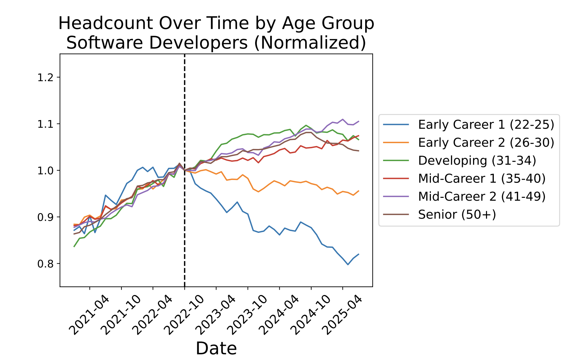
Now, software develope are a good case study. Conceptually, it is clear that they are exposed to recent advances in AI and this is also reflected in queries to Claude, which often are about coding tasks. However, let’s understand if this pattern holds more generally. To begin, we will focus only on those early career workers (age 22-25). It could be that early career workers are generally seing declines in employment, and so the decline for software developers is not specific to AI exposure. Therefore, let’s see if this decline in employment is only for occupations that are highly exposed to AI. The figure below plots the change in employment for early career workers (age 22-25) for different occupations. The darker the line, the more exposed the occupation is to AI. As we can see, the darker lines tend to see decreases in employment relative to the introduction of AI. But this is not reflected in the lighter lines, which tend to see continued growth in employment. One thing to note is that the drop in employment for early career workers here is much less pronounced than it was for software developers specifically. By 2025, employment has fallen by about 5 percent for early career workers in the most exposed occupations.
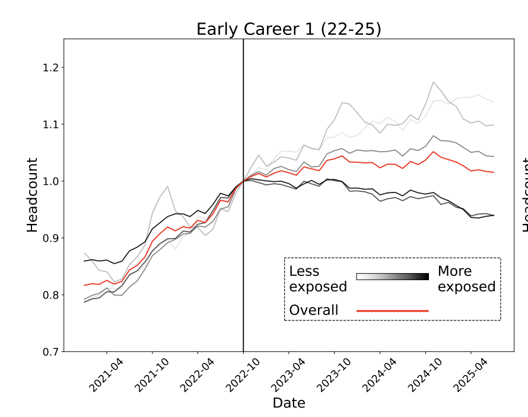
Now, let’s see how this looks for mid-career workers (age 41-49). As can be seen in the figure below, there is no clear relationship between AI exposure and employment for mid-career workers. All of the lines tend to be overlapping.
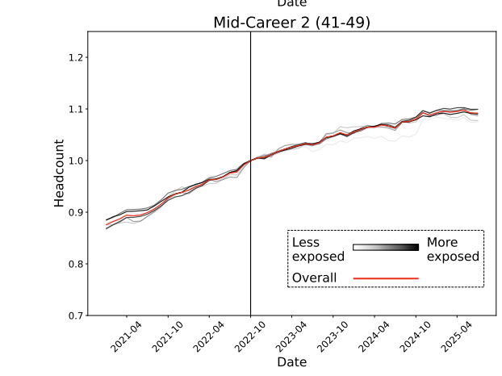
8.4.2 Fact 2: Wages Have Been Flat
While we see clear evidence of employment declines for early career workers in occupations exposed to AI, wages seem to have seen different patterns. For example, take the four occupations below that are differentially exposed to AI. For example, in Panel A we again return to software developers. Even so we saw large declines in employment for early career workers (the blue line), wages have actually increased for this group relative to other groups. This could be driven by a few different things. First, there could be a selection effect. Maybe only the best software developers are being hired, which is driving up wages. Second, it could be that AI is actually complementing the work of software developers, allowing them to be more productive and therefore command higher wages. Therefore, even though we see declines in employment, the workers that remain are more productive and receive higher wages.
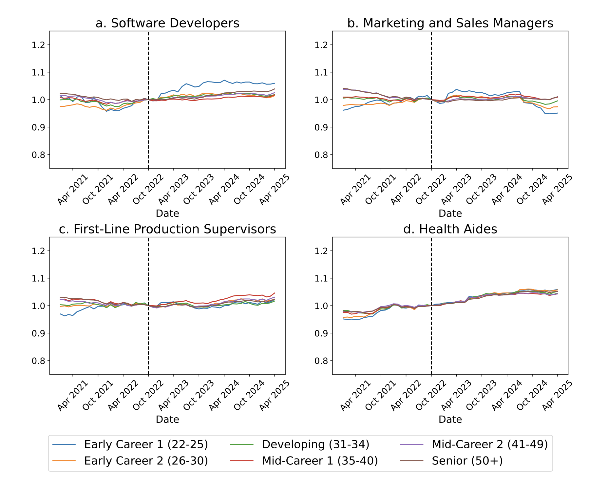